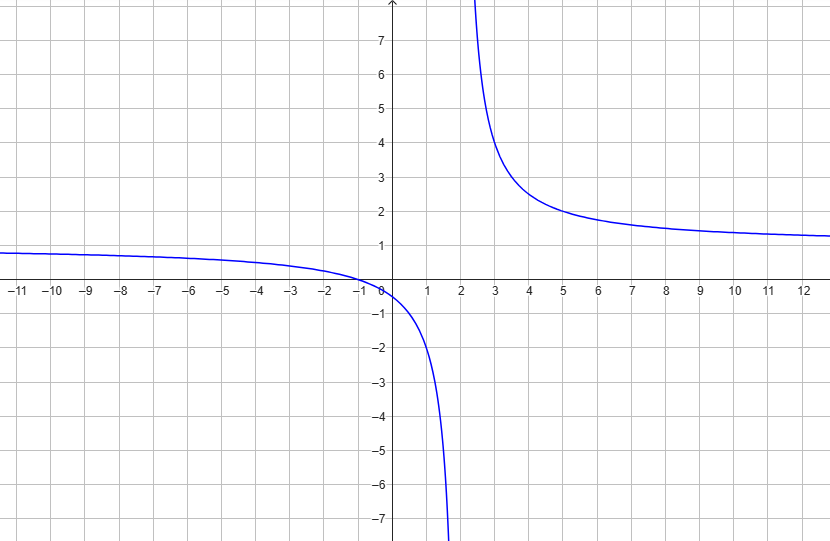

Consideriamo la funzione
\[
f(x) = \sqrt{\dfrac{2x - 4}{-5x + 1}}
\]
Individuare il dominio della funzione \(f\)
(ovvero individuare tutti i valori della \(x\) per i quali la funzione è definita)
Soluzione:
La funzione è definita per
\[
\dfrac{1}{5} \lt x \leq 2
\]
quindi il suo dominio è l'insieme
\[
D = \Big(\dfrac{1}{5}\,,\,\,2\Big]
\]
Esercizio
Consideriamo la funzione
\[
f(x) = \dfrac{x + 2}{3x + 1}
\]
Individuare per quali valori della \(x\) si ha
\[
\dfrac{1}{1 + f(x)} \gt 0
\]
Soluzione:
Si ha
\[
\begin{align*}
\dfrac{1}{1 + f(x)}
&= \dfrac{1}{1 + \frac{x + 2}{3x + 1}} =
\\\\
&= \dfrac{3x + 1}{4x + 3}
\end{align*}
\]
Il suo segno è positivo se
\[
x \in \left(-\infty\,,\,\,-\dfrac{3}{4}\right) \cup \left(-\dfrac{1}{3}\,,\,\,+\infty\right)
\]
Svolgimento
Esercizio
Consideriamo la funzione \(f\) avente il seguente grafico.

Quanto vale \(f(-1)\)?
Soluzione: \(f(-1) = 0\)
Qual è la variazione della funzione da \(x = 3\) a \(x = 5\)
Soluzione: la variazione è di \(-2\).
Per quale valore della \(x\) la funzione assume valore \(-2\)?
Soluzione: \(\,\, x = 1\)
É vero che \(f(x) > 1\,\,\) per ogni \(x\) maggiore di \(2\)?
Soluzione: sì, perché in corrispondenza di tali valori della \(x\) il grafico della
funzione
\(f\)
sta sopra la retta \(y = 1\)
É vero che la funzione assume valori negativi per ogni \(x\) minore di \(-1\)?
Soluzione: no, è vero l'opposto. Per \(x \lt -1\) il grafico della funzione si trova
sotto l'asse
delle \(x\).